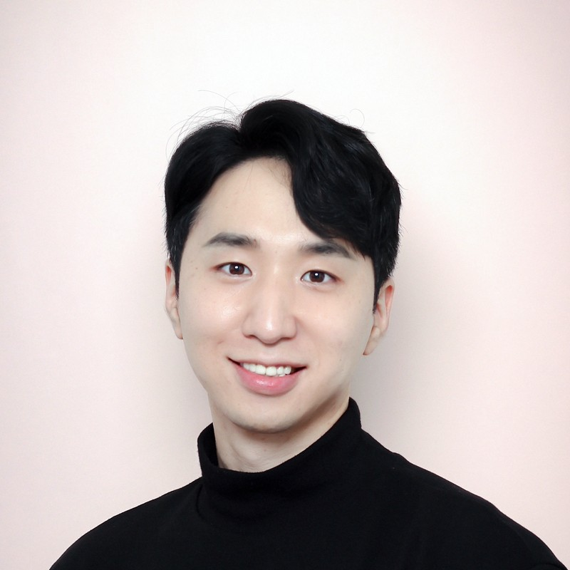

ML Engineer · 6+ years in industry · 5+ years of graduate research
I'm an ML engineer at TMAP Mobility, building recommendation and pricing models and the MLOps that ships them.
Previously, I was an AI researcher at Kakao Brain (ICLR, CVPR). Before that, I spent three years in Prof. Sung Ju Hwang's MLAI Lab (UNIST → KAIST) as research staff and then a Ph.D. student, and built robots and vision systems in the Robotics & Vision Lab at Sungkyunkwan University.

Details and figures for each project →
Last updated October 2026